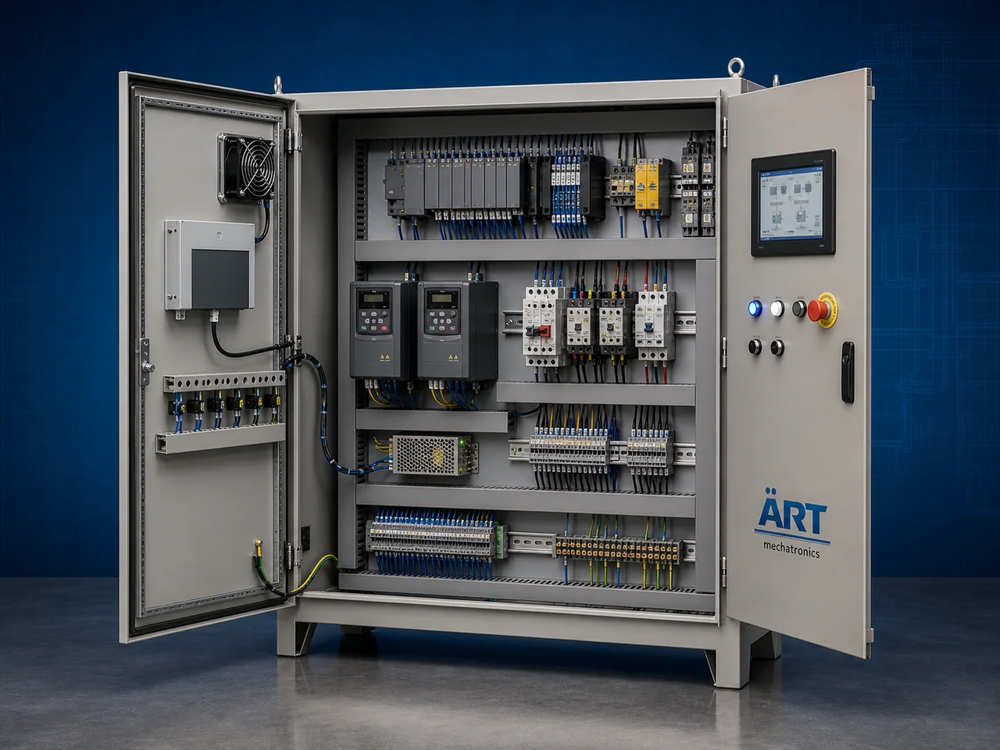

PLC Automation Control Panel (Industrial Process Control & Smart Factory Automation System)
A PLC Automation Control Panel, also known as a PLC Control System, Industrial Automation Panel, or Programmable Logic Controller Panel, is an advanced industrial automation solution designed for automatic machine control, process automation, monitoring, synchronization, data handling, motor…

About the Plc Automation Control Panel
PLC automation systems are widely used for: ✔ Industrial machine automation ✔ Process control systems ✔ Conveyor automation ✔ Packaging line automation ✔ Smart factory operations ✔ Industrial plant synchronization
The system improves: ✔ Production efficiency ✔ Process accuracy ✔ Automation reliability ✔ Energy management ✔ Labor reduction ✔ Industrial productivity
Industrial PLC panels integrate: ✔ PLC controllers ✔ HMI touchscreen systems ✔ VFD drives ✔ Servo control systems ✔ Sensors and instrumentation ✔ SCADA integration
to achieve intelligent and fully automated industrial operations.
PLC automation control panels are widely used in industries such as:
Food processing industries
Packaging industries
Pharmaceutical industries
Pan masala & tobacco industries
Chemical industries
Grain and flour industries
Plastic industries
Smart factory automation projects
where precise automation, machine synchronization, and intelligent process control are essential.
The system is highly suitable for: ✔ Automatic production lines ✔ Conveyor systems ✔ Mixer automation ✔ Batch processing plants ✔ Packaging machines ✔ Material handling automation
ART Mechatronics offers high-performance PLC automation control panels, engineered for Industry 4.0 integration, intelligent process automation, energy-efficient operation, and reliable long-term industrial performance.
Working Principle of Plc Automation Control Panel
PLC panel receives signals from: ✔ Sensors ✔ Limit switches ✔ Temperature controllers ✔ Load cells ✔ Encoders ✔ Pressure transmitters
PLC controller processes programmed logic and automation instructions
System makes intelligent decisions according to process conditions and automation sequence.
PLC panel controls: ✔ Motors ✔ Conveyors ✔ Mixers ✔ Packaging machines ✔ Pumps ✔ Burners ✔ Valves automatically and accurately.
System synchronizes: Machine sequencing Production timing Conveyor movement Material feeding Process safety
HMI touchscreen displays: Machine status Production data Alarm systems Process parameters Automation controls
PLC automation integrates with: SCADA systems ERP software Robotics AGV/AMR systems Industry 4.0 networks
Types of Plc Automation Control Panels
- 1. Machine Automation PLC Panel
Designed for: ✔ Individual industrial machine automation systems
- 2. Process Automation Control Panel
Suitable for: ✔ Continuous process industries and plants
- 3. Conveyor Automation Panel
Uses: ✔ Conveyor synchronization and material handling automation systems
- 4. Packaging Machine PLC Panel
Designed for: ✔ Packaging and filling automation systems
- 5. Batch Processing Automation Panel
Suitable for: ✔ Automatic batching and mixing systems
- 6. Smart Factory PLC Control System
Designed for: ✔ Industry 4.0 intelligent automation operations
Industries Using Plc Automation Control Panels
🌿 Pan Masala & Mouth Freshener Industry Supari processing, mixing, drying, and packaging automation systems 🚬 Tobacco Industry Tobacco blending, drying, and packaging automation systems 🍃 Food Processing Industry Food production and process automation systems 🌶️ Spice Industry Spice grinding, mixing, and packaging automation systems 💊 Pharmaceutical Industry Hygienic production and process control systems ⚗️ Chemical Industry Chemical processing and batching automation systems 🌾 Grain & Flour Industry Grain cleaning, milling, and conveying automation systems ♻️ Plastic & Recycling Industry Recycling and extrusion automation systems
Features & Advantages
✔ Fully automated industrial process control ✔ Improves production efficiency and accuracy ✔ Reduces labor and operational errors ✔ Real-time monitoring and data management ✔ Energy-efficient automation system ✔ Smart alarm and safety interlock systems ✔ Easy integration with industrial machinery ✔ Industry 4.0 and SCADA compatibility ✔ Reliable long-term industrial operation
Technical Highlights
PLC Brands: Siemens Delta Schneider Mitsubishi Allen Bradley Omron Panel Construction: Mild Steel / Stainless Steel panels Control Features: HMI touchscreen interface VFD drive control Servo synchronization PID process control Communication: Ethernet Modbus Profibus IoT connectivity Automation: Semi-automatic Fully automatic PLC-based systems
Turnkey Plc Automation Solutions
ART Mechatronics offers: Complete PLC automation systems Smart factory automation solutions Conveyor and machine synchronization systems SCADA and Industry 4.0 integration Installation & commissioning After-sales service & AMC
Why Choose Art Mechatronics
Expertise in industrial automation and smart factory systems Customized PLC automation solutions for multiple industries High-performance and reliable industrial control systems Advanced process synchronization capability Proven automation performance across sectors
Applications
Food Processing Plants Pan Masala Manufacturing Units Tobacco Processing Plants Pharmaceutical Industries Packaging Facilities Smart Factory Automation Projects
Related Automation & Robotics machines
Get pricing & specs for the Plc Automation Control Panel
Share the product, target capacity, current process and plant location. These details help our engineers discuss the right machine or line configuration.
One partner, from design to start-up
ART Mechatronics designs, manufactures, installs and commissions your Plc Automation Control Panel solution with regional presence in India, UAE and Thailand.